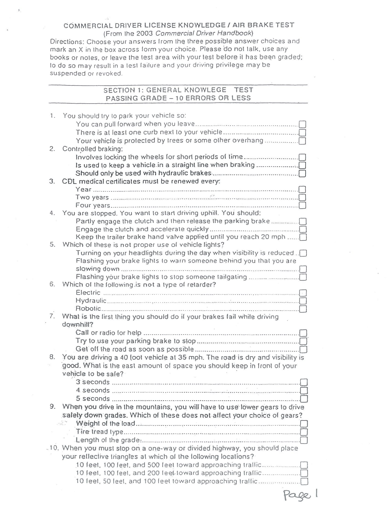

Original preservadoCuestionario impreso · página 1
Preparación comercial · California
Aprende la ruta.
Domina el examen.
Tu centro bilingüe para estudiar conducción comercial, frenos de aire y seguridad vial con el material fuente siempre a la vista.
✓ Original preservado✓ Estudio bilingüe✓ Progreso local
Tu progreso realGUARDADO LOCALMENTE
0%
COBERTURA DEL CUESTIONARIO
Comienza cuando quieras
0 de 255 espacios respondidos.
Contenido fuente y vigencia
Los PDFs originales se muestran sin alteraciones. El cuestionario en español es una traducción de estudio generada a partir de los escaneos, no un documento oficial. El cuestionario escaneado indica que proviene del manual comercial de 2003; contrasta las reglas con el manual comercial incluido y la normativa vigente.
Documentos fuente
Tu biblioteca, intacta.
Abre cada documento en el visor. Nunca reemplazamos ni reescribimos el archivo original.
Explorador original
El cuestionario, página por página.
Los escaneos fueron extraídos directamente del PDF. Son copias byte por byte de las imágenes originales incrustadas.
✓
FIDELIDAD VERIFICADA26 de 26 páginas

ORIGINAL Esta vista nunca sustituye el documento PDF fuente.
Cuestionario completo en español
26 páginas, siempre frente al original.
La versión de estudio se presenta en una capa independiente. El escaneo inglés permanece intacto y visible para comprobar cada renglón.
PÁGINA ACTUAL01 / 26
Versión de estudio en españolCorrespondencia por página · original sin modificar
Cargando traducción…
Control de integridad: la numeración, el orden y los saltos de sección se conservan por página. Ante una diferencia causada por la calidad del escaneo histórico, prevalece la imagen original mostrada a la izquierda.
Centro bilingüe
Dos idiomas. La fuente siempre visible.
Compara el original en inglés con la publicación oficial del DMV en español. Ningún archivo fuente se reemplaza ni se edita.
Original inglésPublicación oficial en español
Correspondencia completa disponible. Ambas publicaciones contienen 208 páginas y conservan la estructura del Manual del Conductor Comercial.
* La edición oficial española del manual general se publica como “Resumen del Manual del Automovilista”; no se presenta como traducción página por página de la edición inglesa.
Laboratorio visual
Entiende el sistema, no solo memorices.
Explora tres modelos interactivos y selecciona cada componente para ver su función durante la operación.
Academia
Muchas rutas. Un solo objetivo.
Elige la forma de aprender que mejor funcione para ti hoy.
LECTURA INMERSIVA
Original + español, lado a lado
Compara el documento fuente con una capa de apoyo en español, sin tocar el original.MICROLECCIONES
Una regla a la vez
Sesiones cortas con ejemplos, contexto y comprobación inmediata.MAPAS MENTALES
Conecta lo importante
Visualiza cómo se relacionan inspección, conducción y frenos.TARJETAS ACTIVAS
Recuerda sin releer
Voltea tarjetas bilingües y califica qué tan bien lo recordaste.ORDENA EL PROCESO
Inspección en secuencia
Coloca los pasos en orden y construye una rutina que no se olvida.ESCENARIOS
Decide en contexto
Practica decisiones de seguridad en situaciones reales de operación.ESCUCHA Y REPITE
Vocabulario CDL
Escucha términos en inglés y asócialos con su significado técnico.PLAN ADAPTATIVO
Tu próxima mejor sesión
Recibe una ruta según tus respuestas y conceptos más débiles.Simulador
Practica como si ya fuera el día.
Texto original del cuestionario escaneado. Traducción de apoyo separada y visible bajo demanda.
MEJOR RESULTADO—
Clave del formulario históricoLas respuestas califican el cuestionario de 2003 tal como fue impreso. Para reglas que pueden haber cambiado, el manual oficial vigente mostrado arriba tiene prioridad.
PREGUNTA 1 DE 10
Tu progreso
Lo que mides, mejora.
Tu actividad se guarda únicamente en este navegador.
Conocimiento general 0%
Frenos de aire 0%
Pasajeros / autobús 0%
Historial de simulaciones
Tus últimos intentos
Completa un examen personalizado para iniciar tu historial.